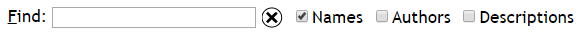

On the Subject of Repository Symbols
Pw, W, Mz, Ba, what are those?
- What are repository symbols?
Repository Symbols are a way to relate module names with their 1 to 4 letter symbols. It is also an alternative way to search for the desired manuals in the search bar faster.
- How do you use them to search for manuals?
- How can I view the list of symbols?
Simply type the symbol in the search bar without modifying the checkboxes, it will always be enabled.
To view the list of symbols, simply go to Repository of Manual Pages > View > Periodic Table.

There is a Google Sheet which records all symbols as well.